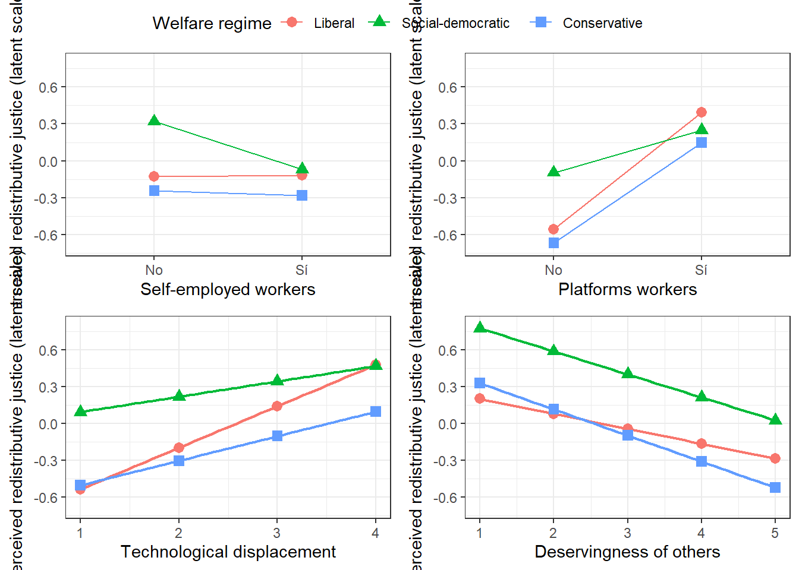

df1 <- emmip(reg8, welfare_regime ~ selfemploy,
mode = "latent", CIs = FALSE, plotit = FALSE)
int1 <- ggplot(df1, aes(x = selfemploy, y = yvar,
color = welfare_regime, shape = welfare_regime,
group = welfare_regime)) +
geom_line() +
geom_point(size = 2.8) +
scale_shape_manual(values = c(16, 17, 15)) +
scale_x_discrete(name = "Self-employed workers", labels = c("No", "Sí")) +
scale_y_continuous(name = "Perceived redistributive justice (latent scale)",
limits = c(-0.7, 0.8), breaks = c(-0.6, -0.3, 0, 0.3, 0.6))+
labs(color = "Welfare regime", shape = "Welfare regime") +
theme_bw()Figure 1 presents a correlation matrix of the main variables analyzed. In this matrix, the correlations vary between low and moderate negative and positive values. The main correlation effects are between perceived redistributive justice and being a platform worker (r=0,32, p<0.001), the perceived technological displacement (r=0,24, p<0,001), the skill obsolescence risk (r=0,26, p<0,001), and the perceived technological benefit (r=0,21, p<0,001) which are positive and moderated effects. In other sence, the deservingess of others has a negative and moderated effect (r=0,16, p<0,01).
Regarding the independent variables, the main correlation effects are between the corcern about job and income loss and being a platform worker (r=0,15, p<0,001), and with the perceived of technological change variables. Between this this three last variables, the correlations effects are positive and significant, contrary to the initial intuitions.

Multilevel ordinal logistic regression models
| Model 1 | Model 2 | Model 3 | Model 4 | Model 5 | Model 6 | |
|---|---|---|---|---|---|---|
| self-employed worker (ref. No) | -0.059 | -0.057 | -0.057 | -0.068 | -0.068 | -0.069 |
| (0.039) | (0.039) | (0.039) | (0.039) | (0.039) | (0.039) | |
| Platform worker (ref. No) | 1.174*** | 1.189*** | 0.828*** | 0.844*** | 0.843*** | 0.780*** |
| (0.050) | (0.050) | (0.051) | (0.051) | (0.051) | (0.051) | |
| Concern about job and income loss | -0.054*** | -0.180*** | -0.175*** | -0.176*** | -0.166*** | |
| (0.014) | (0.015) | (0.015) | (0.015) | (0.015) | ||
| Technological displacement | 0.265*** | 0.261*** | 0.261*** | 0.237*** | ||
| (0.023) | (0.023) | (0.023) | (0.024) | |||
| Skill obsolescence risk | 0.126*** | 0.123*** | 0.123*** | 0.126*** | ||
| (0.020) | (0.020) | (0.020) | (0.020) | |||
| Perceived technological benefit | 0.453*** | 0.456*** | 0.456*** | 0.431*** | ||
| (0.021) | (0.021) | (0.021) | (0.022) | |||
| Deservingness of others | -0.181*** | -0.181*** | -0.177*** | |||
| (0.014) | (0.014) | (0.014) | ||||
| Welfare regime (Ref.= Liberal) | ||||||
| Social-democratic | 0.408 | 0.395 | ||||
| (0.267) | (0.267) | |||||
| Conservative | -0.138 | -0.126 | ||||
| (0.190) | (0.190) | |||||
| BIC | 50264.921 | 50260.479 | 48843.271 | 48682.213 | 48697.344 | 48616.180 |
| Numb. obs. | 16872 | 16872 | 16872 | 16872 | 16872 | 16872 |
| Groups (Country) | 27 | 27 | 27 | 27 | 27 | 27 |
| Variance: Country: (Intercept) | 0.235 | 0.227 | 0.244 | 0.227 | 0.192 | 0.193 |
| Note: Cells contain regression coefficients with standard errors in parentheses. ***p < 0.001; **p < 0.01; *p < 0.05. All models are controlled by sex, age and income with significant effects and education with no significant effect | ||||||
| Model 1 | Model 2 | Model 3 | Model 4 | Model 5 | Model 6 | |
|---|---|---|---|---|---|---|
| Self-employed worker (ref. No) | -0.018 | 0.009 | -0.071 | -0.068 | -0.071 | -0.071 |
| (0.042) | (0.069) | (0.039) | (0.039) | (0.039) | (0.039) | |
| Platform worker (ref. No) | 0.877*** | 0.781*** | 0.953*** | 0.775*** | 0.777*** | 0.779*** |
| (0.058) | (0.051) | (0.079) | (0.051) | (0.051) | (0.051) | |
| Concern about job and income loss | -0.167*** | -0.166*** | -0.165*** | -0.098*** | -0.165*** | -0.165*** |
| (0.015) | (0.015) | (0.015) | (0.025) | (0.015) | (0.015) | |
| Technological displacement | 0.237*** | 0.238*** | 0.236*** | 0.238*** | 0.338*** | 0.236*** |
| (0.024) | (0.024) | (0.024) | (0.024) | (0.032) | (0.024) | |
| Deservingness of others | -0.176*** | -0.177*** | -0.177*** | -0.177*** | -0.178*** | -0.122*** |
| (0.014) | (0.014) | (0.014) | (0.014) | (0.014) | (0.024) | |
| Social-democratic | 0.394 | 0.447 | 0.461 | 0.533 | 0.843** | 0.638* |
| (0.267) | (0.270) | (0.268) | (0.290) | (0.286) | (0.309) | |
| Conservative | -0.128 | -0.117 | -0.110 | 0.201 | 0.171 | 0.217 |
| (0.190) | (0.192) | (0.191) | (0.209) | (0.206) | (0.223) | |
| Self-employed X Platform worker | -0.413*** | |||||
| (0.116) | ||||||
| Self-employed X Social-democratic | -0.400** | |||||
| (0.128) | ||||||
| Self-employed X Conservative | -0.047 | |||||
| (0.087) | ||||||
| Platform worker X Social-democratic | -0.607*** | |||||
| (0.135) | ||||||
| Platform worker X Conservative | -0.137 | |||||
| (0.109) | ||||||
| Job and income loss X Social-democratic | -0.047 | |||||
| (0.044) | ||||||
| Job and income loss X Conservative | -0.120*** | |||||
| (0.032) | ||||||
| Technological displacement X Social-democratic | -0.214*** | |||||
| (0.049) | ||||||
| Technological displacement X Conservative | -0.138*** | |||||
| (0.037) | ||||||
| Deservingness X Social-democratic | -0.065 | |||||
| (0.041) | ||||||
| Deservingness X Conservative | -0.090** | |||||
| (0.031) | ||||||
| BIC | 48613.219 | 48625.127 | 48615.167 | 48621.208 | 48612.196 | 48626.846 |
| Numb. obs. | 16872 | 16872 | 16872 | 16872 | 16872 | 16872 |
| Groups (Country) | 27 | 27 | 27 | 27 | 27 | 27 |
| Variance: Country: (Intercept) | 0.193 | 0.196 | 0.193 | 0.193 | 0.192 | 0.194 |
| Note: Cells contain regression coefficients with standard errors in parentheses. ***p < 0.001; **p < 0.01; *p < 0.05. All models are controlled by sex, age and income with significant effects and education with no significant effect | ||||||

emmip no estima probabilidades predicha, estima un factor latente entre los cuatro interceptos para estimar propensión latente hacia las categorías altas de perceción de justicia redistributiva